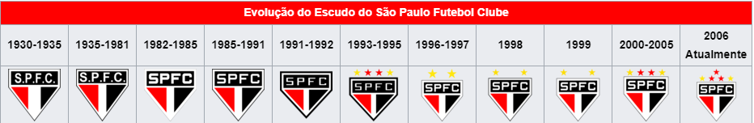
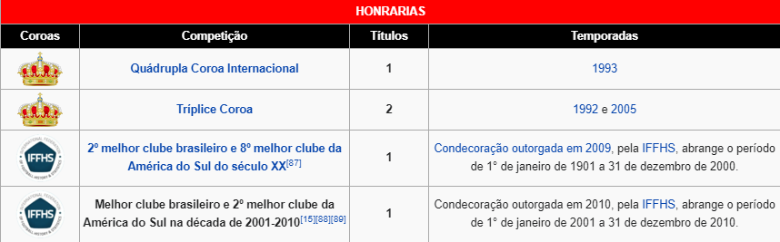
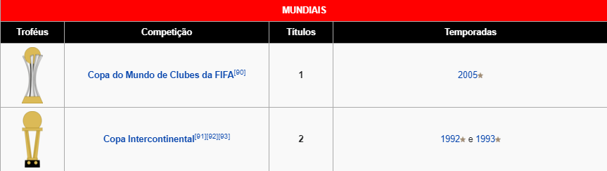
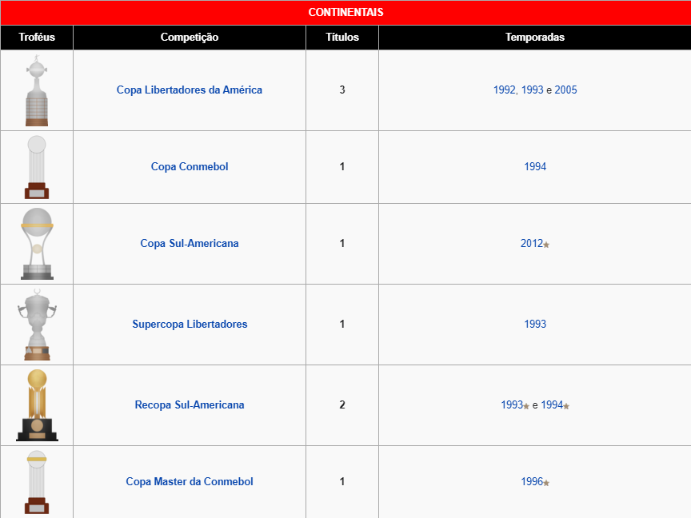
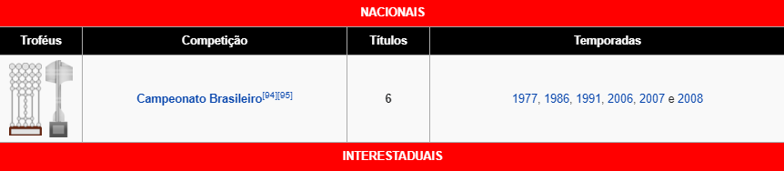
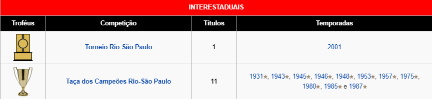
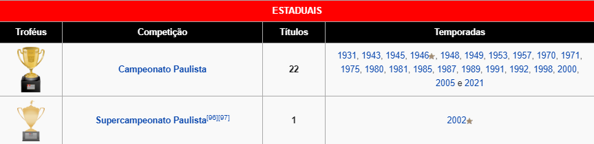
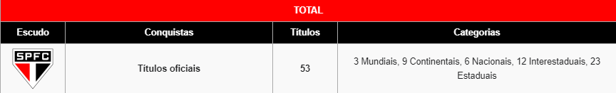

Conheça a trajetória gloriosa desse clube!
Símbolos
Escudo da Associação Atlética das Palmeiras O Tricolor Paulista manteve ao longo de sua história, o mesmo nome, as mesmas cores, o mesmo escudo, o mesmo uniforme e a mesma bandeira. Os fundadores do São Paulo Futebol Clube queriam nome, cores e formas que representassem suas vontades como esportistas. Para isso, foi retirado o vermelho do CA Paulistano, o preto da AA das Palmeiras e o branco de ambos, simbolizando a união dos times em um outro, maior. Assim nasciam as três cores do clube. Já o escudo e os uniformes do SPFC foram desenhados pelo estilista alemão Walter Ostrich, simpatizante do novo clube em formação, com a colaboração de Firmiano de Moraes Pinto, um dos presentes na fundação. Escudo
Escudo do clube
De acordo com o estatuto do clube, o símbolo do Tricolor Paulista é formado por um triângulo isósceles branco, invertido, com base maior elevada por um retângulo com altura igual à metade da lateral do referido triângulo. Dentro dessa parte alongada encontra-se outro retângulo, de cor preta, com as iniciais SPFC em branco. No interior do triângulo uma faixa branca de largura igual a um quarto da lateral menor com dois triângulos escalenos, um vermelho à esquerda e outro preto, à direita. As estrelas foram introduzidas posteriormente e também tem um significado especial. As duas douradas, gravadas no escudo em 1955 e, posteriormente, no uniforme em 1997, representam os recordes mundiais e olímpicos conquistados por Adhemar Ferreira da Silva nas Olimpíadas de 1952 em Helsinque e nos Jogos Pan-Americanos de 1955 no México. á as três estrelas vermelhas, ao centro, introduzidas em 2006, representam o bicampeonato da Copa Intercontinental, nos anos de 1992 e 1993 e a conquista do Mundial da FIFA, em 2005. Pelo estatuto não são permitidas inclusões de títulos considerados de menor importância. Campeonatos continentais, nacionais, estaduais ou amistosos jamais poderão ser representados por estrelas. Abaixo, a evolução dos escudos, desde a fundação até os dias atuais:
Mascote
Até hoje o São Paulo Futebol Clube teve apenas uma mascote, que ficou marcada em sua história. Criada na década de 1940 por um cartunista do jornal A Gazeta Esportiva, a imagem do santo agradou a todos os são-paulinos, permanecendo até hoje como mascote oficial do clube. Pelo fato do verdadeiro São Paulo ter morrido com aproximadamente 60 anos, é representada por um velhinho de barba branca. É chamada de "Santo" Paulo para não confundir com o nome do clube.
Hino
O hino do São Paulo Futebol Clube (composto por Porfírio da Paz em 1935 e oficializado em 1942) passou por diversas alterações até chegar à atual estrutura. A criação do hino foi um tanto atípica e comovente. Porfírio da Paz em 1935, à época tenente da Força Pública e farmacêutico, acabara de ser informado que perderia sua casa por falta de pagamento, e por conta do nervosismo cantarolava uma canção entoando o nome do clube do qual era apaixonado. Mais tarde e mais calmo, pôs no papel a letra que viria a ser o hino do São Paulo Futebol Clube. o lançamento do hino em 1942, contando com diversos segmentos esportivos, Porfírio apresentou o então hino do clube. Mas uma das estrofes, em particular a sétima, causou certas interpretações errôneas. Ela continha a rima "Do Palmeiras também trazes", em referência à AA das Palmeiras, clube este que se fundiu ao CA Paulistano para formar o Tricolor Paulista, porém, o Palestra Itália havia alterado seu nome para Palmeiras, o que fez gerar toda uma confusão. Porfírio então substituiu a palavra "Palmeiras" pela palavra "Floresta", região onde se localizava o São Paulo e muitos outros clubes da época, ficando pois, "Da Floresta também trazes". Por não haver uma ligação estreita com o clube, Porfírio viu-se obrigado a remodelar totalmente a estrofe. Deixando a sétima estrofe do hino da maneira como a conhecemos hoje. O estribilho também fora mudado acrescentando-se o advérbio "já". Depois de mudado quase que por completo, no dia 29 de abril de 1966, Porfírio pediu licença em uma reunião no Egrégio Conselho Deliberativo para que pudesse cantar o hino definitivo do clube. Aproveitou a ocasião também para doar todos os direitos autorais ao Tricolor do Morumbi.
Morumbi
Com capacidade para 66 795 pessoas, o Estádio Cícero Pompeu de Toledo, também conhecido como Estádio do Morumbi, foi inaugurado em 2 de outubro de 1960 com o estádio ainda inacabado e sua primeira partida foi entre São Paulo Futebol Clube e Sporting Lisboa de Portugal, sendo a partida vencida pelos donos da casa pelo placar de 1 a 0. O gol dessa partida foi marcado pelo jogador Peixinho. Em um cruzamento, ele mergulhou para cabecear a bola próximo do chão. Desde então essa jogada ficou conhecida no Brasil como "gol de peixinho". A inauguração total se deu em 25 de janeiro de 1970 em uma partida entre o Tricolor Paulista e o Porto, também de Portugal, que terminou empatada em 1 a 1 com gols de Vieira Nunes para o Porto e Miruca para o São Paulo. Capacidade de público quando inaugurado finalizado: 149 408 pessoas. Complexo Social O Complexo Social Manoel Raymundo Paes de Almeida é o espaço destinado ao lazer de seus sócios e está localizado em uma área total de 85 mil metros quadrados, sendo considerada uma das mais imponentes sedes sociais do Brasil. Possui infraestrutura suficiente para atender aos sócios do clube e também aos esportes amadores.
Morumbi Concept Hall Nessa área o clube pretende aumentar a circulação de pessoas e gerar receita fora dos dias de jogos, além de fortalecer a marca. Entre os empreendimentos estão o Santo Paulo Bar, Livraria Nobel, Espaço Únyco e Rbk Concept Store.
Títulos
O São Paulo possui doze títulos internacionais oficiais, separando os times brasileiros por estado e somando os títulos internacionais destes times, apenas os estados de São Paulo e Rio Grande do Sul possuem mais títulos internacionais do que o Tricolor sozinho. Somados os títulos dos times paulistas, eles teriam dezesseis; mineiros ficariam com onze títulos, gaúchos com treze e os cariocas com oito. No âmbito mundial, apenas dez times no mundo inteiro conquistaram dez ou mais títulos internacionais, o São Paulo foi o oitavo time no mundo que conquistou dez títulos internacionais oficiais, além disso, é o sétimo time no mundo a conquistar mais de dez títulos. No continente sul-americano ele foi o terceiro time a realizar tal feito. É o único time existente que foi bicampeão da Copa Intercontinental com 100% de aproveitamento, em todos os jogos que disputou venceu durante o tempo normal. Também é o primeiro campeão mundial com 100% de aproveitamento. Foi o primeiro bicampeão consecutivo da história na Recopa Sul-Americana e o único a conquistá-la disputando o título, sendo que a taça já lhe pertencia por direito, conforme o regulamento, por ter sido campeão dos dois torneios continentais mais importantes de 1993, a Taça Libertadores da América e a Supercopa Libertadores. Ninguém possui uma quantidade de variedade maior de títulos internacionais que o Tricolor, foram oito competições diferentes ganhas. É o único time sul-americano que conseguiu duas tríplices coroas consecutivamente. No Brasil é o clube que tem mais títulos nos principais torneios de futebol internacional disputados por clubes nacionais: Copa Sul-Americana (um título), Copa Libertadores da América (três títulos), Copa Intercontinental (dois títulos) e Copa do Mundo de Clubes da FIFA (um título).[78] No que diz respeito ao somatório de títulos oficiais de abrangência nacional e internacional de clubes brasileiros de futebol, em setembro de 2019 o São Paulo FC figurava como o maior campeão do Brasil, com 18 conquistas. Em abril de 2010, a Confederação Brasileira de Futebol reconheceu o SPFC como o primeiro time a conquistar cinco vezes o Campeonato Brasileiro a partir de 1975,[80][81] adquirindo a posse definitiva da Copa Brasil ("Taça das Bolinhas"). Com essa decisão, a CBF confirma o entendimento do Tribunal Regional Federal em considerar o Sport Club do Recife o campeão brasileiro de 1987. Porém, em 2011, a decisão administrativa da CBF dando a posse definitiva ao São Paulo foi anulada pela liminar do Flamengo devido ao fato do troféu não está mais em jogo desde 1992. Pelo Campeonato Paulista, o Tricolor do Morumbi tem vinte e dois títulos de 1941 até hoje. O clube, desde a sua fundação, conquistou o Campeonato Paulista em todas as décadas, excetuando a de 2010. Ainda pelo campeonato estadual e considerando uma década novamente como o período entre os anos 1 e 0, o clube é o que mais vezes recebeu a "coroação" de Rei da Década, foram quatro vezes: (década de 1940 (cinco títulos), década de 1970 (três títulos (dividido)), década de 1980 (quatro títulos) e década de 1990 (quatro títulos). Paulo FC chegou a conquistar sete títulos com sua equipe principal em 1993, quando o Tricolor do Morumbi foi campeão da Taça Libertadores, da Supercopa Libertadores, da Recopa Sul-Americana, do Copa Europeia/Sul-Americana de 1993 e dos torneios Ciudad de Santiago, Santiago de Compostela e Troféu Jalisco. Já conquistou duas tríplices coroas, em 1992 e 2005, com dois títulos continentais e um estadual, e a quádrupla coroa internacional uma vez, em 1993, com três títulos continentais e um intercontinental.
Constam os principais títulos conquistados pelo clube paulista em toda sua história.
      